Gambar dan Pembungkus Teks | Memformat Gambar | Shapes | Text Boxes | Menyelaraskan, Mengurutkan, dan Mengelompokkan Objek | Tabel | Charts
Menambahkan gambar ke dokumen Anda bisa menjadi cara yang bagus untuk mengilustrasikan informasi penting dan menambahkan aksen dekoratif ke teks yang ada. Digunakan dalam jumlah sedang, gambar dapat meningkatkan tampilan keseluruhan dokumen Anda.
Menambahkan gambar ke dalam dokumen Anda bisa menjadi cara yang baik menggambarkan informasi penting, dan memberikan kesan dekoratif pada teks. Ini digunakan sebagai moderasi, karena gambar dapat meningkatkan keseluruhan tampilan dokumen Anda.
Jika Anda memiliki gambar tertentu, Anda dapat menyisipkan gambar dari file. Dalam contoh kita, kita akan menyisipkan gambar yang disimpan lokal di komputer kita. Jika Anda ingin menggunakan contoh, klik kanan gambar di bawah ini dan simpan ke komputer Anda.
Untuk menyisipkan gambar dari file:
-
Tempatkan titik penyisipan di mana Anda ingin gambar akan muncul.

-
Pilih tab Insert pada Ribbon, lalu klik perintah Pictures.
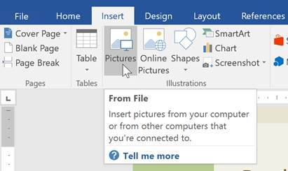
-
Kotak dialog Insert Picture akan muncul. Arahkan ke folder di mana gambar Anda berada, kemudian pilih gambar dan klik Insert.
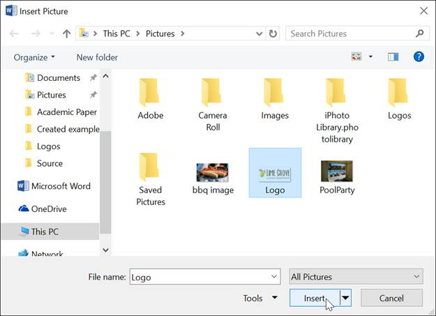
-
akan muncul gambar dalam dokumen.
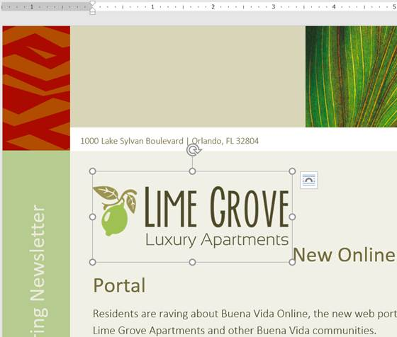
Untuk mengubah ukuran gambar, klik dan tarik salah satu sudut sizing handles. gambar akan berubah ukurannya sekaligus menjaga proporsinya tetap sama. Jika Anda ingin meregangkan secara horisontal atau vertikal, Anda dapat menggunakan sisi sizing handles.
Saat Anda menyisipkan gambar dari file, Anda mungkin memperhatikan bahwa sulit untuk memindahkannya tepat di tempat yang Anda inginkan. Ini karena pembungkusan teks untuk gambar diatur ke In Line with Text. Anda harus mengubah pengaturan pembungkusan teks jika Anda ingin memindahkan gambar dengan bebas, atau jika Anda hanya ingin teks membungkus gambar dengan cara yang lebih alami.
Untuk membungkus teks di sekitar gambar:
-
Pilih gambar yang ingin dibungkus teks di sekelilingnya. Tab Format akan muncul di sisi kanan Ribbon.
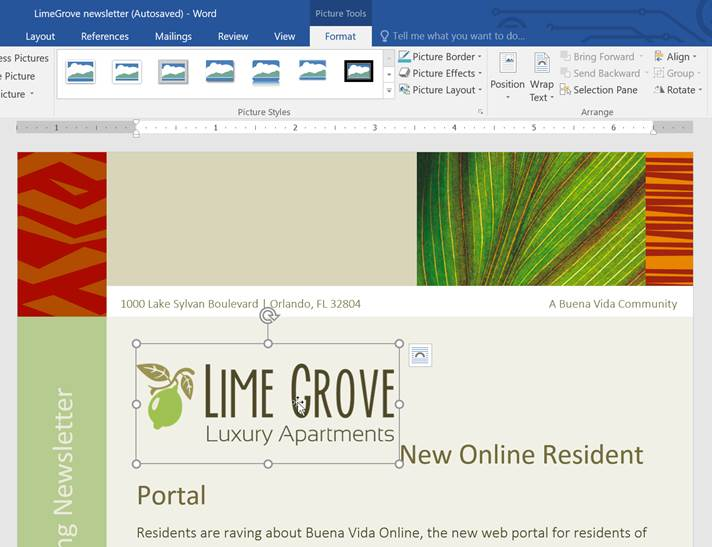
-
Pada tab Format, klik perintah Wrap Text di kelompok Arrange. Kemudian pilih opsi Text Wrapping yang diinginkan. Dalam contoh kita, kita akan pilih In Front of Text sehingga kita bisa bebas menggerakan gambar tanpa mempengaruhi teks. Anda juga dapat memilih More Layout Options untuk memperindah tata letak.
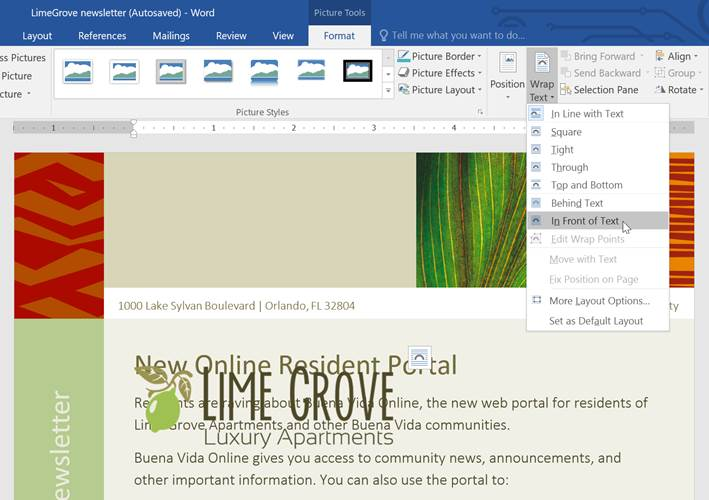
-
Teks akan membungkus disekeliling gambar. Sekarang Anda dapat memindahkan gambar jika Anda ingin. Cukup klik dan tarik ke lokasi yang diinginkan. Ketika Anda memindahkannya, akan muncul panduan alignment untuk membantu Anda menyesuaikan gambar pada halaman.
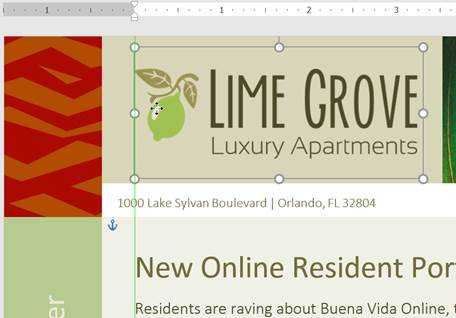
Anda juga dapat mengakses pilihan Text Wrapping dengan memilih gambar dan mengklik tombol Layout Options yang muncul.
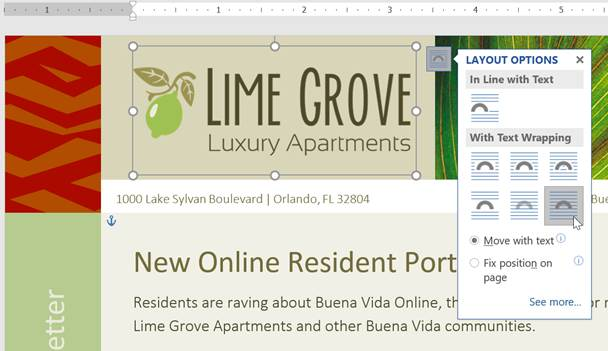
Jika panduan alignment tidak muncul, pilih tab Page Layout, kemudian klik perintah Align. Gunakan Alignment Guides dari menu drop-down yang muncul.
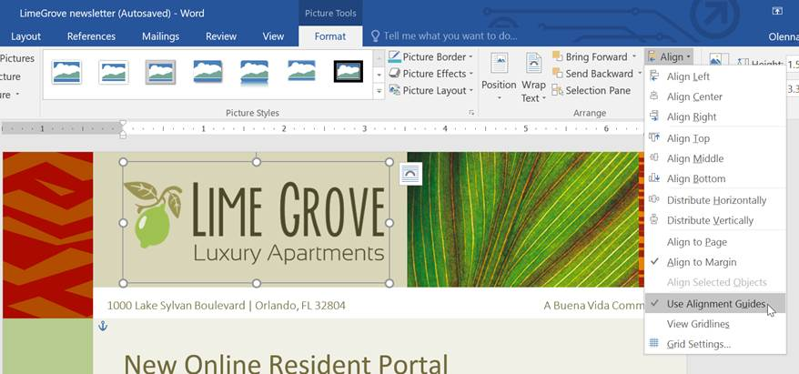
Text wrapping yang sudah disediakan memungkinkan Anda dengan cepat memindahkan gambar ke lokasi tertentu pada halaman. Secara otomatis, teks akan membungkus di sekitar objek sehingga masih mudah untuk dibaca.
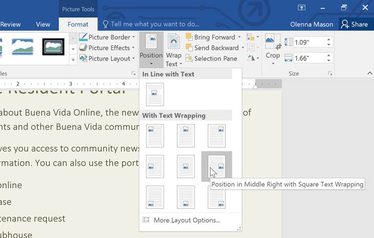
Jika Anda tidak memiliki gambar yang Anda suka pada komputer, Anda dapat menemukan gambar secara online untuk ditambahkan pada dokumen Anda. Word menawarkan dua pilihan untuk mencari gambar secara online.
-
OneDrive: Anda dapat memasukkan gambar yang tersimpan di OneDrive Anda. Anda juga dapat menautkan akun online lainnya dengan akun Microsoft Anda, seperti Facebook dan Flickr.

-
Bing Image Search: Anda dapat menggunakan opsi ini untuk mencari gambar di Internet. Secara default, Bing hanya menampilkan gambar yang dilisensikan dengan lisensi Creative Commons, yang berarti Anda dapat menggunakan gambar tersebut untuk proyek-proyek Anda sendiri. Namun, Anda harus mengklik link ke website gambar untuk melihat apakah ada pembatasan lain mengenai bagaimana gambar itu dapat digunakan.

Untuk menyisipkan gambar online:
-
Tempatkan titik penyisipan di mana Anda ingin gambar muncul.
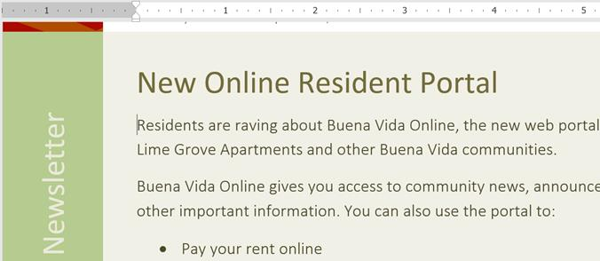
-
Pilih tab Insert, kemudian klik perintah Online Pictures.
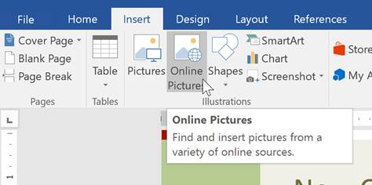
- Kotak dialog Insert Pictures akan muncul.
-
Pilih Bing Image Search atau OneDrive Anda. Dalam contoh kita, kita akan menggunakan Bing Image Search.
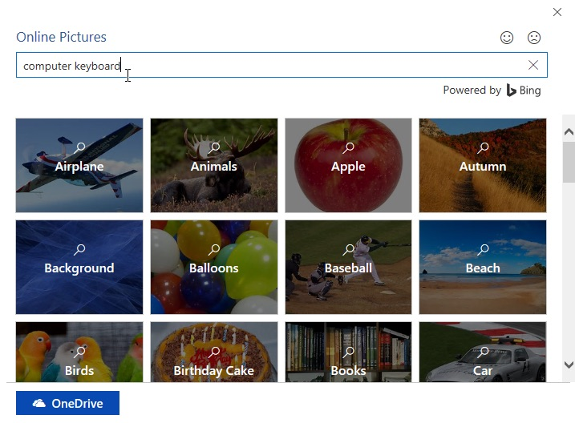
- Tekan tombol Enter. hasil pencarian Anda akan muncul dalam kotak.
-
Pilih gambar yang diinginkan, lalu klik Insert.
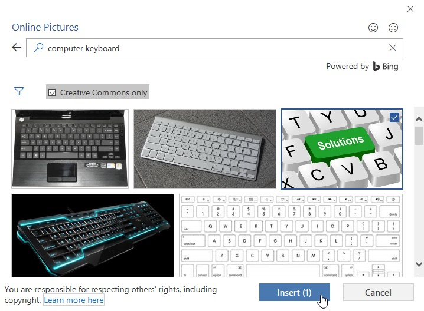
-
akan muncul gambar di dalam dokumen.
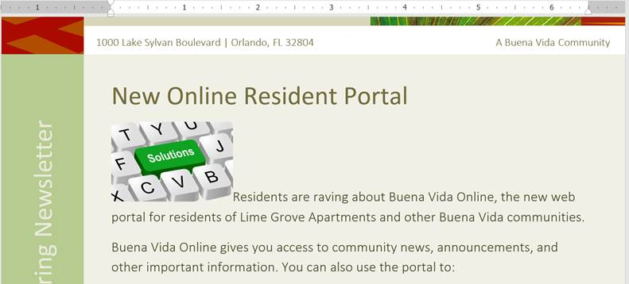
 Video
Video
Tonton video di bawah untuk mempelajari lebih lanjut tentang cara menambahkan gambar ke dokumen Anda.
Latihan!
- Buka dokumen latihan dan gulir ke halaman 3.
- Ubah text wrapping dari gambar anjing menjadi Square.
- Tarik gambar ke sisi kanan bawah paragraf.
- Tempatkan titik penyisipan di sebelah heading Community Reminders.
- Gunakan perintah Online Pictures dan ketik kata Recycle ke dalam pencarian.
- Sisipkan simbol daur ulang.
- Jika diperlukan, gunakan sudut sizing handle untuk mengubah ukuran simbol recycle sehingga semuanya sesuai pada halaman 3.
- Ubah text wrapping menjadi Square dan drag simbol ke sisi kanan dari bullet pertama.
-
Setelah selesai, halaman 3 harus terlihat seperti ini:

Ada banyak cara untuk memformat gambar di Word. Misalnya, Anda dapat mengubah ukuran atau bentuk gambar agar lebih sesuai dengan dokumen Anda. Anda juga dapat meningkatkan penampilannya dengan menggunakan alat penyesuaian gambar Word.
Ketika Anda memotong gambar, bagian dari gambar akan dihapus. Cropping berguna jika Anda ingin mengubah gambar yang terlalu besar dan Anda ingin mengambil hanya pada bagian tertentu.
- Pilih gambar yang ingin dipotong. Tab Format akan muncul.
-
Dari tab Format, klik perintah Crop.
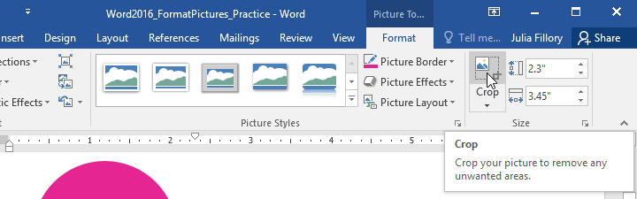
-
Cropping handles akan muncul di sisi dan sudut-sudut gambar. Klik dan tarik handle manapun untuk memotong gambar. Karena cropping handle dekat resizing handles, hati-hati untuk menghindari penyeretan handle dengan tidak sengaja, yang akan mengubah ukuran.
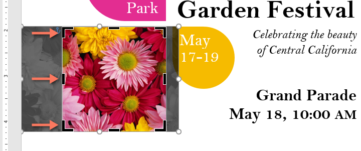
-
Untuk mengkonfirmasi, klik perintah Crop lagi. gambar akan dipotong.
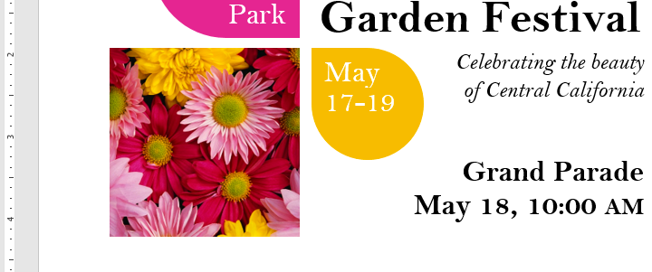
Untuk memotong gambar menjadi shape:
- Pilih gambar yang ingin dipotong, kemudian klik tab Format.
-
Klik panah drop-down Crop. Arahkan kursor ke Crop to Shape, kemudian pilih bentuk yang diinginkan dari menu drop-down.
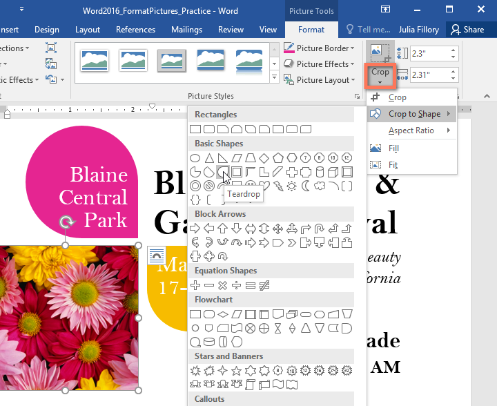
-
Gambar akan dipotong dengan bentuk yang dipilihnya.
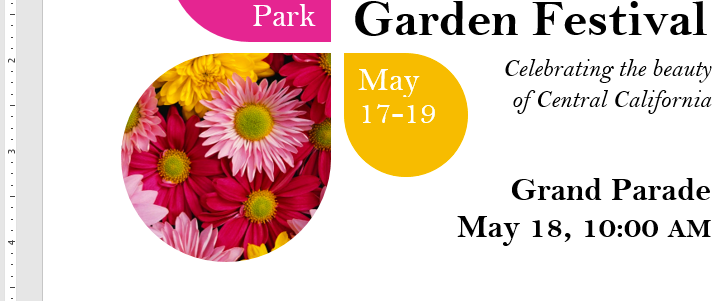
Untuk menambahkan border pada gambar:
- Pilih gambar yang ingin ditambahkan border, kemudian klik tab Format.
- Klik perintah Picture Border. Sebuah menu drop-down akan muncul.
-
Dari sini, Anda dapat memilih warna, ketebalan, dan apakah garisnya putus-putus.
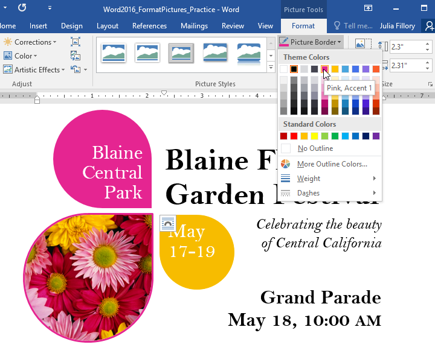
- Perbatasan akan muncul di sekitar gambar.
Dengan alat penyesuaian gambar Word, Anda dapat mengatur properti dengan mudah baik warna, kontras, saturasi, maupun tone. Word juga menawarkan gaya gambar built-in, yang dapat digunakan untuk menambahkan bingkai, drop shadow, dan efek yang telah ditetapkan lainnya.
Ketika Anda sudah siap menyesuaikan gambar, tinggal pilih saja. Kemudian gunakan opsi di bawah ini, yang dapat ditemukan pada tab Format.
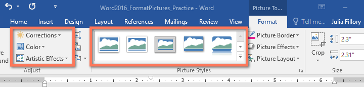
Corrections
Dari sini, Anda juga dapat mempertajam atau memperhalus gambar untuk mengatur tampilan kejelasan atau kabur. Anda juga dapat menyesuaikan kecerahan dan kontras, yang mempengaruhi pencahayaan gambar dan intensitas umum.
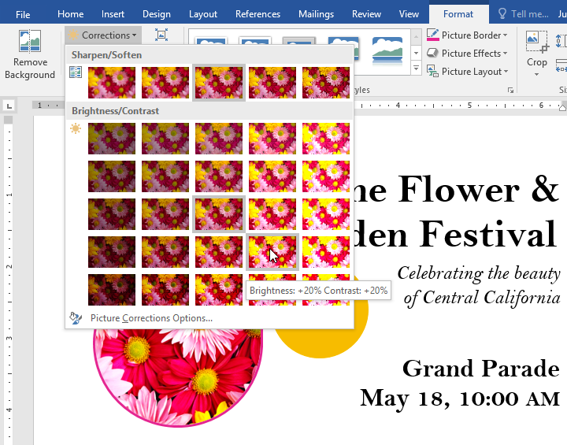
Color
Menggunakan perintah ini, Anda dapat mengubah saturasi gambar tersebut (seberapa hidup warnanya akan muncul), tone (temperatur warna gambar, dari dingin ke hangat), dan coloring (warna keseluruhan gambar).
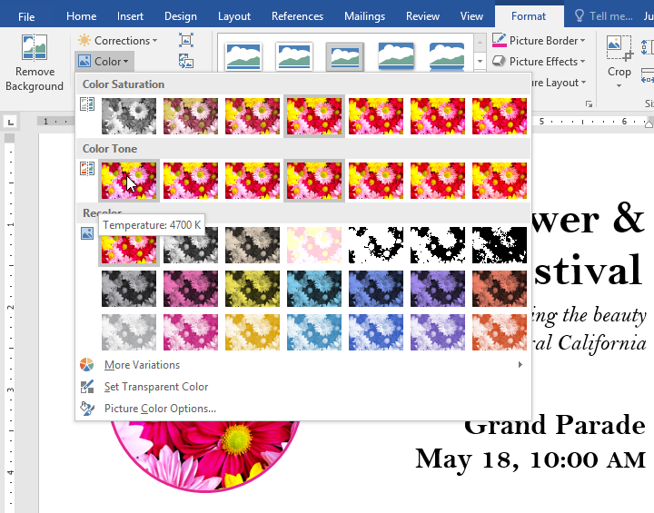
Artistic Effect
Di sini, Anda dapat menerapkan efek khusus untuk gambar Anda, seperti pastel, cat air, atau tepi bercahaya. Karena hasilnya begitu menonjol, Anda mungkin perlu menggunakan efek ini dengan cermat (terutama pada dokumen profesional).
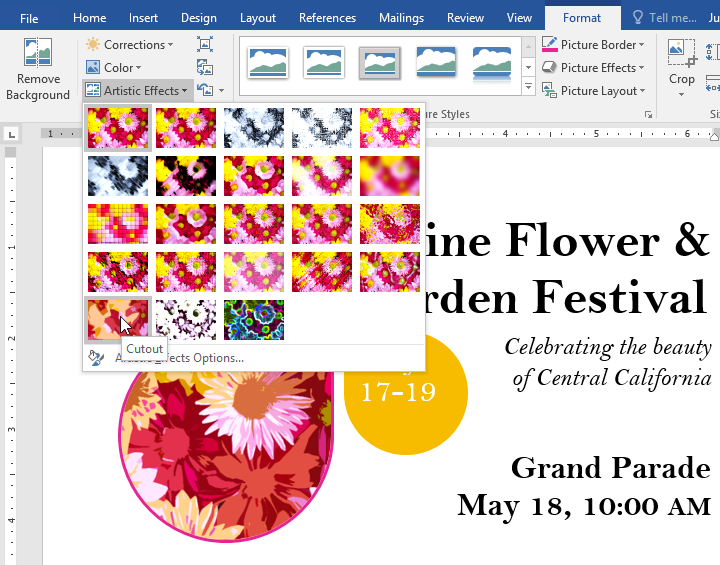
Kelompok Picture Styles
Kelompok ini berisi banyak gaya standar berbeda yang membuat pemformatan gambar menjadi lebih mudah. gaya gambar dirancang untuk membingkai gambar Anda tanpa mengubah pengaturan dasar maupun efek.
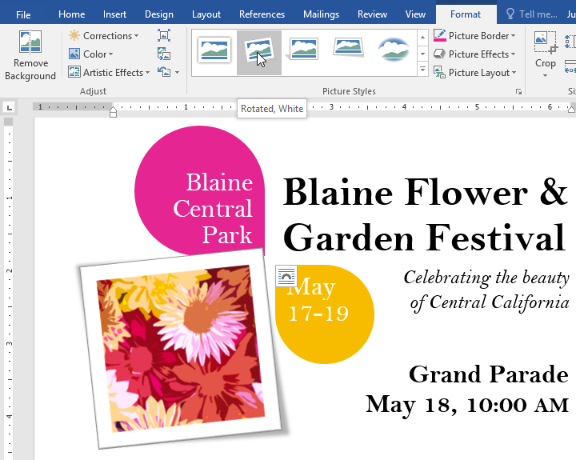
Jika Anda berencana untuk mengirim email dokumen yang berisi gambar, Anda harus memantau ukuran file-nya. Ukuran besar, gambar dengan resolusi tinggi dapat menyebabkan dokumen Anda menjadi sangat besar, yang akan mempersulit
untuk melampirkan email. Selain itu, memotong bidang gambar akan menyimpan dokumen secara default, yang dapat menambah ukuran file.
Untungnya, Anda dapat mengurangi ukuran file dokumen Anda dengan mengompresi gambar
Anda. Ini akan menurunkan resolusinya dan menghapus daerah dipotong.
Untuk mengompres gambar:
- Pilih gambar yang ingin Anda kompres, lalu arahkan ke tab Format.
-
Klik perintah Compress Pictures.
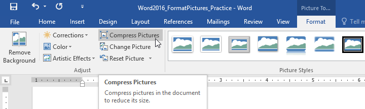
- Sebuah kotak dialog akan muncul. Centang kotak di sebelah Delete cropped areas of pictures. Anda juga dapat memilih apakah akan menerapkan pengaturan untuk gambar ini saja atau untuk semua gambar dalam dokumen.
- Pilih Target output. Jika Anda mengirimkan dokumen melalui email, Anda mungkin ingin memilih Email, yang menghasilkan ukuran file terkecil.
-
Klik Oke.
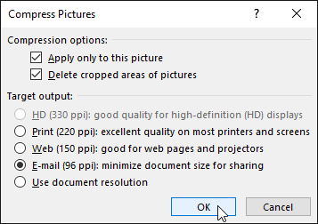
Video
Tonton video di bawah ini untuk mempelajari lebih lanjut tentang format gambar.
Latihan!
- Buka dokumen latihan kami.
- Gulir ke halaman 2 dan pilih gambar perahu layar.
- Pada tab Format, ubah gaya menjadi Simple Frame, Putih.
- Dengan gambar masih dipilih, pilih Crop to Shape dan crop menjadi Double Wave dalam kategori Stars and Banners. Petunjuk: Nama-nama bentuk akan muncul ketika Anda mengarahkannya ke mereka.
- Pilih gambar jangkar.
- Pada tab Format, gunakan menu drop-down Color untuk mengubah warna jangkar menjadi Gold, Accent warna 2 Light.
-
Setelah selesai, halaman Anda akan terlihat seperti ini:
Anda dapat menambahkan berbagai bentuk untuk dokumen Anda, termasuk panah, info, kotak, bintang, dan bentuk flowchart. Ingin mengatur nama dan alamat secara terpisah dari sisa dari resume Anda? Gunakan garis. Perlu membuat diagram yang menunjukkan batas waktu atau proses? Gunakan shape flowchart. Meskipun Anda mungkin tidak memerlukan shape dalam setiap dokumen yang Anda buat, mereka dapat menambah daya tarik visual dan kejelasan.
unduh file latihanUntuk menyisipkan bentuk:
- Pilih tab Insert, kemudian klik perintah Shapes. Sebuah menu drop-down dari shape akan muncul.
-
Pilih bentuk yang diinginkan.
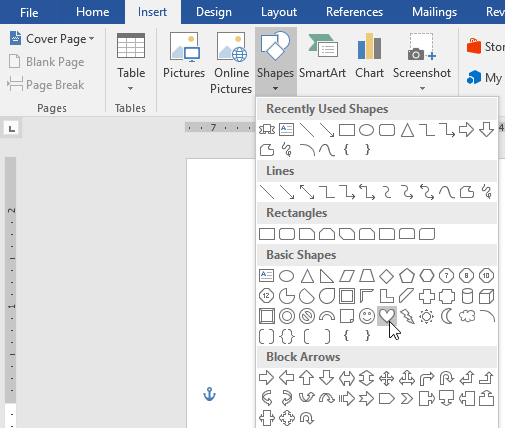
-
Klik dan drag lokasi yang diinginkan untuk menambahkan shape ke dokumen Anda.
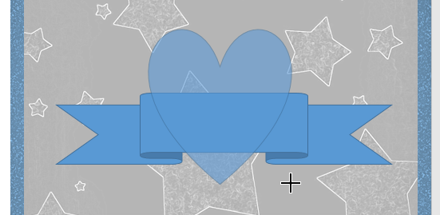
Jika Anda ingin, Anda dapat memasukkan teks di dalam shape. Ketika shape muncul dalam dokumen Anda, Anda dapat mulai mengetik. Anda kemudian dapat menggunakan opsi format pada tab Home untuk mengubah font, ukuran font, atau warna teks.
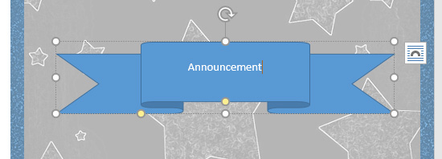
Jika salah satu shape tumpang tindih dengan yang lain, Anda perlu mengubah urutannya sehingga shape yang diinginkan akan muncul di depan. Anda dapat meletakkan shape ke depan atau ke belakang. Jika Anda memiliki beberapa gambar, Anda dapat menggunakan Bring to Forward atau Send to Backward agar urutannya sesuai. Anda juga dapat memindahkan shape di depan atau di belakang teks.
Untuk mengubah urutan shape:
-
Klik kanan shape yang Anda ingin pindahkan. Dalam contoh kita, kita ingin jantung muncul di belakang pita, jadi kami akan klik kanan jantung.
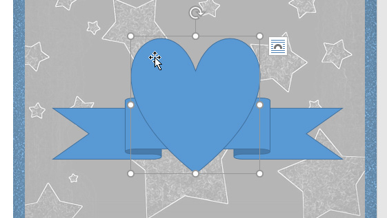
-
Pada menu yang muncul, arahkan kursor Bring to Front atau Send to Back. Beberapa pilihan ordering akan muncul. Pilih opsi order yang diinginkan. Dalam contoh ini, kita akan memilih Send to Back.
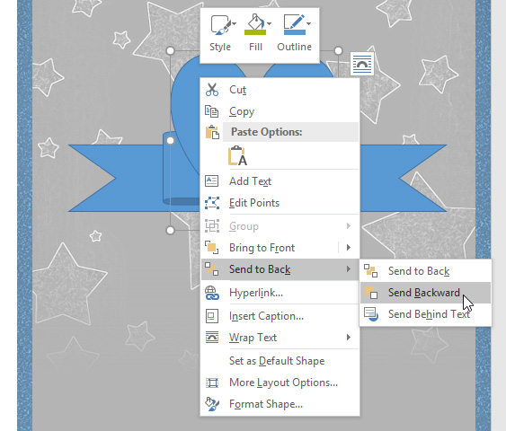
-
Urutan shape akan berubah.
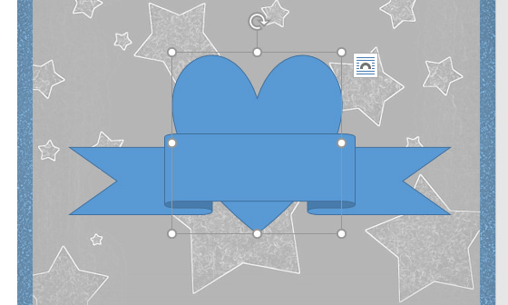
Jika Anda memiliki beberapa shape yang ditempatkan di atas satu sama lain, mungkin akan menyulitkan untuk memilih bentuk secara individu. Panel Selection memungkinkan Anda untuk memilih shape dan menariknya ke lokasi yang baru. Untuk mengakses panel Selection, klik Selection Pane pada tab Format.
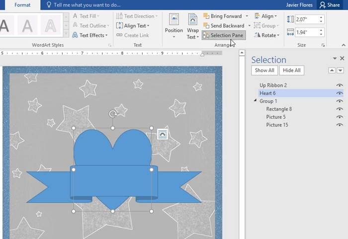
Untuk mengubah ukuran shape:
-
Pilih shape yang Anda ingin ubah ukurannya. Sizing handles akan muncul di sudut-sudut dan sisi shape.
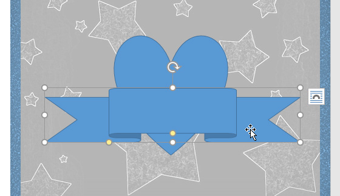
-
Klik dan tarik Handel sampai ukuran shape yang diinginkan. Anda dapat menggunakan sudut Handel untuk mengubah tinggi shape dan lebar pada saat yang sama.
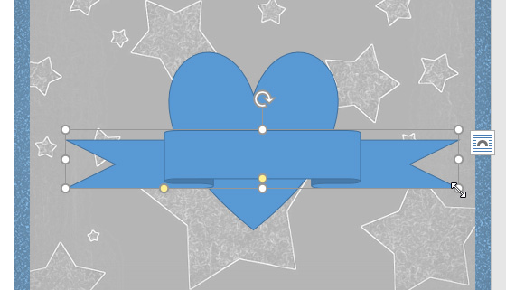
-
Untuk memutar shape, klik dan tarik rotation handle.
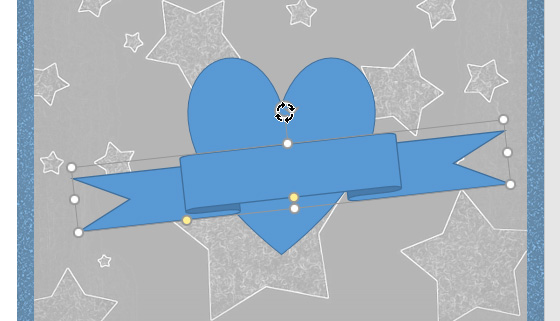
Beberapa bentuk juga memiliki satu atau lebih yellow handle yang dapat digunakan untuk memodifikasi bentuk. Misalnya, dengan bentuk spanduk Anda dapat mengatur posisi lipatan.
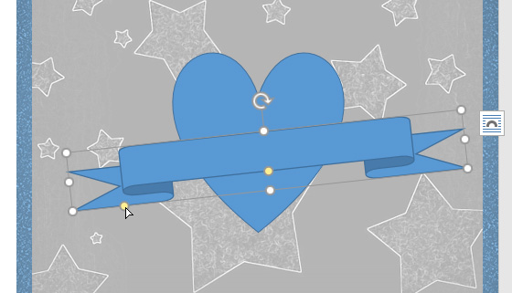
Memodifikasi shape
Word memungkinkan Anda untuk memodifikasi shape Anda dalam berbagai cara sehingga Anda dapat menyesuaikannya untuk proyek-proyek Anda. Anda dapat mengubah shape menjadi bentuk yang berbeda, memformat gaya dan warna shape, dan menambahkan berbagai efek.
Untuk mengubah gaya shape:
Memilih gaya shape memungkinkan Anda untuk menerapkan warna preset dan mengubah efek tampilan shape Anda dengan cepat.
-
Pilih shape yang ingin Anda ubah.
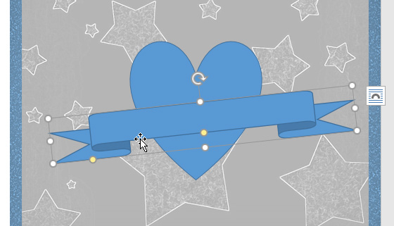
-
Pada tab Format, klik panah drop-down More di grup Shape Style.
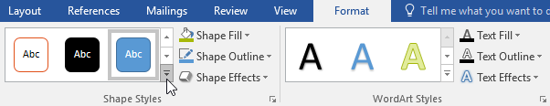
-
Sebuah menu drop-down style akan muncul. Pilih gaya yang ingin Anda gunakan.
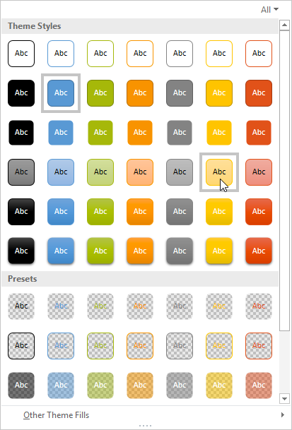
-
Shape akan muncul sesuai gaya yang dipilih.
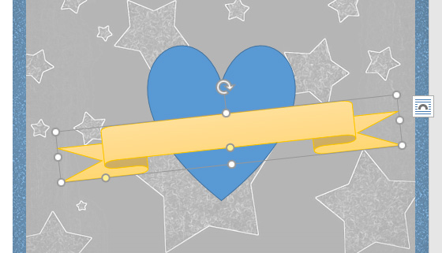
Untuk mengubah warna isian bentuk:
-
Pilih shape yang ingin Anda ubah.
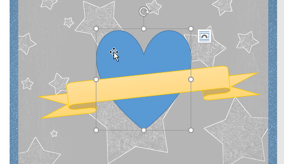
-
Pada tab Format, klik panah drop-down Shape Fill. Pilih warna yang ingin Anda gunakan. Untuk melihat lebih banyak pilihan warna, pilih More Fill Colors.
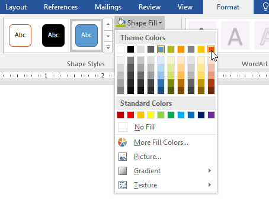
-
Shape akan muncul sesuai warna pengisi yang dipilih.
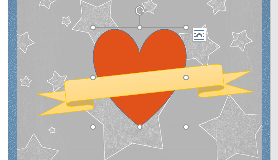
Untuk mengubah garis bentuk:
-
Pilih shape yang ingin Anda ubah.
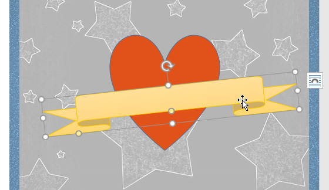
- Pada tab Format, klik panah drop-down Shape Outline. Menu Shape Outline akan muncul.
-
Pilih warna yang ingin Anda gunakan. Jika Anda ingin membuat garis transparan, pilih No Outline.
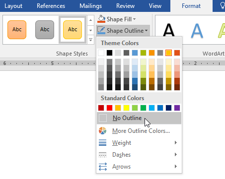
-
Shape akan muncul dengan warna garis yang dipilih.
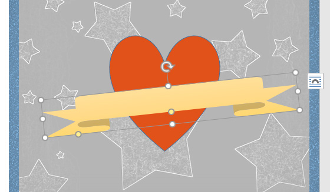
Dari menu drop-down, Anda dapat mengubah warna garis, ketebalan, dan apakah itu adalah garis putus-putus.
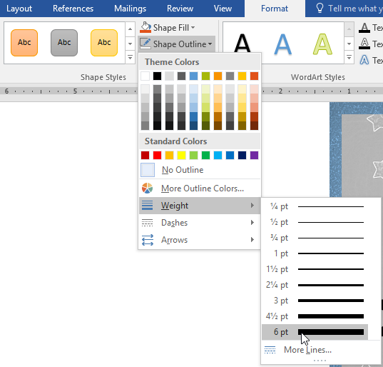
Untuk menambahkan efek shape:
-
Pilih shape yang ingin Anda ubah.
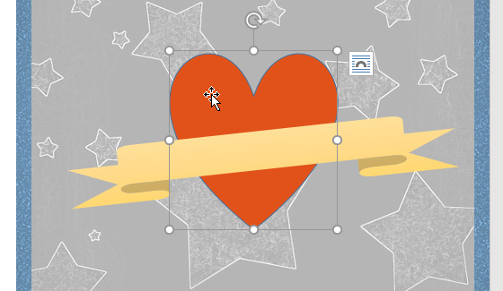
-
Pada tab Format, klik panah tarik-turun Shape Effects. Pada menu yang muncul, arahkan mouse pada efek gaya yang ingin Anda tambahkan, lalu pilih efek preset yang diinginkan.
-
Shape akan muncul dengan efek yang dipilih.
Untuk lebih menyesuaikan efek shape Anda, pilih Options pada akhir setiap menu. Panel Format Shape akan muncul, yang memungkinkan Anda untuk menyesuaikan efek.
Untuk mengubah menjadi Shape yang berbeda:
-
Pilih Shape yang ingin Anda ubah. Tab Format akan muncul.
-
Pada tab Format, klik perintah Edit Shape. Pada menu yang muncul, arahkan mouse pada Change Shape, kemudian pilih bentuk yang diinginkan.
-
Bentuk baru akan muncul.
Video
Tonton video di bawah ini untuk mempelajari lebih lanjut tentang shape di Word.
Latihan!
- Buka dokumen latihan kami.
- Di sisi kanan halaman, sisipkan bentuk awan dari kelompok Basic shape. Petunjuk: nama Shape akan muncul ketika Anda mengarahkannya pada mereka.
- Ubah garis Shape menjadi abu-abu.
- Ubah warna pengisi shape menjadi putih.
- Di bawah menu drop down Effects Shape, tambahkan Circle Bevel.
- Di atas awan, sisipkan bentuk Sun dari kelompok Basic shape.
- Ubah gaya shape sesuai pilihan Anda dari Gold style. Petunjuk: nama Style akan muncul ketika Anda mengarahkan mouse pada mereka. Pastikan nama gaya memiliki kata Gold di dalamnya.
- Urutkan bentuk matahari di belakang bentuk awan.
- Jika diperlukan, pindahkan bentuk awan sehingga matahari mengintip dibaliknya.
-
Setelah selesai, gambar Anda akan terlihat seperti ini:
kotak teks dapat berguna untuk menarik perhatian terhadap teks tertentu. Mereka juga dapat berguna ketika Anda ingin memindahkan teks di dalam dokumen. Word memungkinkan Anda untuk memformat kotak teks dan teks di dalamnya dengan berbagai gaya dan efek.
unduh file latihanUntuk menyisipkan kotak teks:
-
Pilih tab Insert, kemudian klik perintah Text Box dalam kelompok Text.
-
Sebuah menu drop-down akan muncul. Pilih Draw Text Box.
-
Klik dan drag di manapun dalam dokumen untuk membuat kotak teks.
-
Titik penyisipan akan muncul di dalam kotak teks. Sekarang Anda dapat mengetik untuk membuat teks di dalam kotak teks.
-
Jika Anda ingin, Anda dapat memilih teks kemudian mengubah font, warna, dan ukurannya menggunakan perintah pada tab Format dan Home.
- Klik di manapun di luar kotak teks untuk kembali ke dokumen Anda.
Anda juga dapat memilih salah satu kotak teks built-in yang memiliki warna yang telah ditetapkan, font, posisi, dan ukuran. Jika Anda memilih opsi ini, kotak teks akan muncul secara otomatis, sehingga Anda tidak perlu menariknya.
Untuk memindahkan kotak teks:
- Klik kotak teks yang ingin Anda pindahkan.
- Arahkan mouse di atas salah satu dari tepi kotak teks. mouse akan berubah menjadi silang dengan panah.
-
Klik dan tarik kotak teks ke lokasi yang diinginkan.
Untuk mengubah ukuran kotak teks:
- Klik kotak teks yang ingin diubah ukurannya.
-
Klik dan tarik salah satu ukuran pegangan di sudut atau sisi kotak teks sesuai dengan ukuran yang diinginkan.
Memodifikasi kotak teks
Word menawarkan beberapa pilihan untuk mengubah tampilan kotak teks dalam dokumen Anda. Anda dapat mengubah shape, gaya, dan warna kotak teks atau menambahkan berbagai efek.
Untuk mengubah gaya shape:
Memilih gaya shape memungkinkan Anda menerapkan warna preset dan efek yang mengubah tampilan kotak teks Anda dengan cepat.
- Pilih kotak teks yang ingin Anda ubah.
-
Pada tab Format, klik panah drop-down More di grup Style Shape.
-
Sebuah menu drop-down gaya akan muncul. Pilih gaya yang ingin Anda gunakan.
-
Kotak teks akan muncul dalam gaya yang dipilih.
Untuk mengubah bentuk kotak teks:
Mengubah bentuk kotak teks dapat menjadi pilihan yang berguna untuk membuat tampilan yang menarik dalam dokumen Anda.
- Pilih kotak teks yang ingin Anda ubah. Tab Format akan muncul.
-
Dari tab Format, klik perintah Edit Shape.
-
Arahkan mouse di atas Change Shape, kemudian pilih bentuk yang diinginkan dari menu yang muncul.
-
Kotak teks akan muncul diformat sebagai shape.
Video
Tonton video di bawah ini untuk mempelajari lebih lanjut tentang kotak teks di Word.
Latihan!
- Buka dokumen latihan kami.
- Masukan Text Box Sederhana.
- Dalam kotak teks, ketikkan Get an additional 25% off when you mention this ad!
- Ubah font menjadi Gadugi, 20 pt, Align Center.
- Ubah bentuk kotak teks menjadi Double Wave dari kelompok Stars dan Banner.
- Ubah gaya kotak teks dengan memilih gaya apapun di barisan Instense Effect.
- Tarik kotak teks ke bawah Buy 1, Get 1 Free* and Formalwear.
-
Setelah selesai, dokumen Anda akan terlihat seperti ini:

Mungkin ada saat-saat ketika dokumen Anda memiliki beberapa objek, seperti gambar, bentuk, dan kotak teks. Anda dapat mengatur objek dengan cara apapun yang Anda inginkan berdasarkan keselarasan, pengelompokan, urutan, dan perputaran dalam berbagai cara.
Untuk menyelaraskan dua atau lebih objek:
-
Tahan tombol Shift (atau Ctrl) dan klik objek yang ingin diselaraskan. Dalam contoh kita, kita akan memilih empat shapes di sebelah kanan.
-
Dari tab Format, klik perintah Align, kemudian pilih salah satu opsi penyelarasan. Dalam contoh kita, kita akan memilih Right Align.
-
Objek akan disesuaikan berdasarkan opsi yang dipilih. Dalam contoh kita, sekarang shapes sudah selaras satu sama lain.
Untuk mendistribusikan objek secara merata:
Jika Anda telah mengatur objek dalam baris atau kolom, Anda mungkin menginginkan jarak yang sama satu sama lain agar penampilannya lebih rapi. Anda dapat melakukan ini dengan mendistribusikan objek secara horizontal atau vertikal.
- Tahan tombol Shift (atau Ctrl) dan klik objek yang ingin didistribusikan.
-
Pada tab Format, klik perintah Align, kemudian pilih Distribute Horizontally atau Distribute Vertically.
-
Spasi objek akan merata satu sama lain.
Pengelompokan objek
Suatu saat, Anda mungkin ingin mengelompokan beberapa objek menjadi satu objek sehingga mereka akan tetap bersama menjadi satu. Hal ini akan mempermudah daripada memilihnya satu-per-satu, dan juga memungkinkan Anda untuk mengubah ukuran dan memindahkan semua benda pada saat yang sama.
Untuk mengelompokkan objek:
- Tahan tombol Shift (atau Ctrl) dan klik objek yang ingin Anda kelompokkan.
-
Klik perintah Grup pada tab Format, lalu pilih Group.
-
Objek yang dipilih sekarang akan dikelompokkan. Akan ada satu kotak dengan sizing handle di sekeliling group sehingga Anda dapat memindahkan atau mengubah ukuran semua benda pada saat yang sama.
Untuk Ungroup Objek:
-
Pilih objek yang telah dikelompokkan. Dari tab Format, klik perintah Group dan pilih Ungroup.
-
Objek tidak akan dikelompokkan.
Menyusun objek
Selain menyelaraskan objek, Word memberikan Anda kemampuan untuk mengatur objek dalam urutan tertentu. Ordering sangatlah penting ketika dua atau lebih objek saling tumpang tindih karena menentukan mana objek yang berada di depan atau di belakang.
Objek ditempatkan pada susunan yang berbeda sesuai dengan urutan di mana mereka dimasukkan ke dalam dokumen. Pada contoh di bawah, jika kita pindahkan gambar gelombang ke awal dokumen, ini akan menutupi beberapa kotak teks. Itu karena gambar saat ini adalah yang tertinggi, atau tingkat atas. Namun, kita dapat mengubah tingkat meletakkannya di belakang objek lain.
Untuk mengubah tingkatan objek:
- Pilih objek yang ingin dipindahkan. Dalam contoh kita, kita akan pilih gambar gelombang.
-
Dari tab Format, klik perintah Bring Forward atau Send Backward untuk mengubah urutan objek menjadi satu tingkat. Dalam contoh kita, kita akan pilih Send Backward.
-
Objek akan diatur kembali. Dalam contoh kita, sekarang ini gambar berada di belakang teks di sebelah kiri, tapi itu masih menutupi shapes di sebelah kanan.
-
Jika Anda ingin memindahkan objek di belakang atau di depan beberapa objek, biasanya lebih cepat jika menggunakan Bring Forward atau Send Backward, daripada mengklik perintah order beberapa kali.
-
Dalam contoh kita, gambar telah dipindahkan di belakang apapun pada halaman, sehingga semua teks dan shapes lainnya akan terlihat.
Jika Anda memiliki beberapa objek ditempatkan di atas yang lainnya, mungkin akan sulit untuk memilih salah satu objek. Selection Pane memungkinkan Anda dengan mudah menyeret objek ke tingkat yang berbeda. Untuk melihat Selection Pane, klik Selection Pane pada tab Format.
Untuk memutar atau membalik objek:
Jika Anda ingin mengubah suatu objek sehingga menghadap arah yang berbeda, Anda dapat memutar ke kiri atau kanan, atau Anda dapat flip itu secara horizontal atau vertikal.
-
Dengan pilihan objek yang diinginkan, klik perintah Rotate pada tab Format, kemudian pilih opsi rotasi yang diinginkan. Dalam contoh kita, kita akan memilih Horizontal Flip.
-
Objek akan diputar. Dalam contoh kita, kita sekarang dapat melihat gelembung di sebelah kiri yang sebelumnya tersembunyi di balik kotak teks.
Video
Tonton video di bawah untuk mempelajari lebih lanjut tentang mengatur objek dalam Word.
Latihan!
- Buka dokumen latihan kami.
- Gulir ke halaman 2 dan pilih gambar dari gelombang di bagian atas halaman.
- Gunakan perintah Rotate untuk membalik gelombang secara vertikal.
- Gunakan perintah Send to Back untuk memindahkan gelombang balik kotak teks Martinique.
- Pindahkan kotak teks Martinique sehingga dekat bagian bawah gambar gelombang.
- Pastikan gelombang gambar dan kotak teks Martinique tidak lagi dipilih. Tahan tombol Shift, kemudian pilih kotak teks yang berisi Cleaning, Maintenance, Repair, dan Restoration.
- Klik perintah Align, dan pastikan pilihan Objek Align Selected Objek.Pilih Right Aligndan Distribute Vertically.
- Dengan kotak teks masih dipilih, kelompokkan mereka.
-
Setelah selesai, halaman Anda harus terlihat seperti ini:
Sebuah tabel adalah kotak-kotak sel yang tersusun dalam baris dan kolom. Tabel dapat digunakan untuk mengatur jenis konten, apakah Anda bekerja dengan teks atau data numerik. Pada Word, Anda dapat dengan cepat memasukkan tabel kosong atau mengubah teks yang ada menjadi sebuah tabel.Anda juga dapat menyesuaikan tabel Anda menggunakan gaya dan layout yang berbeda.
Untuk menyisipkan table kosong
- Tempatkan titik penyisipan di mana Anda ingin tabel muncul.
-
Arahkan ke tab Insert, kemudian klik perintah Table.
-
Ini akan membuka menu drop-down yang berisi kotak-kotak. Arahkan kursor pada kotak untuk memilih jumlah kolom dan baris yang Anda inginkan.
- Klik kotak-kotak untuk mengkonfirmasi pilihan Anda, dan tabel akan muncul.
-
Untuk memasukkan teks, tempatkan titik penyisipan di setiap sel, kemudian mulai mengetik.
Untuk mengubah teks yang ada untuk tabel:
Pada contoh di bawah, setiap baris teks berisi bagian dari checklist, termasuk tugas-tugas dan hari dalam seminggu. Item dipisahkan oleh tab. Word dapat mengkonversi informasi ini ke dalam tabel, gunakan tab untuk memisahkan data ke dalam kolom.
-
Pilih teks yang akan dikonversi ke tabel. Jika Anda menggunakan file praktik kita, Anda dapat menemukan teks ini pada halaman 2 dari dokumen.
- Buka tab Insert, kemudian klik perintah Table.
-
Pilih Convert Text to Table dari menu drop-down.
-
Sebuah kotak dialog akan muncul. Pilih salah satu opsi di bawah Separate text at. Ini adalah bagaimana Word tahu apa yang harus dimasukkan ke dalam setiap kolom.
-
Klik OK. Teks akan muncul dalam sebuah tabel.
Anda dapat dengan mudah mengubah tampilan tabel Anda setelah Anda menambahkan satu ke dalam dokumen Anda. Ada beberapa pilihan kustomisasi, termasuk menambahkan baris atau kolom dan mengubah gaya tabel.
Untuk menambahkan baris atau kolom:
-
Arahkan di luar tabel di mana Anda ingin menambahkan baris atau kolom. Klik tanda plus yang muncul.
-
Sebuah baris atau kolom baru akan ditambahkan ke tabel.
Untuk menghapus baris atau kolom:
- Tempatkan titik penyisipan di baris atau kolom yang ingin Anda hapus.
-
Klik kanan, lalu pilih Delete Cell dari menu.
-
Sebuah kotak dialog akan muncul. Pilih Delete entire row atauDelete entire column, kemudian klik OK.
- Baris atau kolom akan dihapus.
Untuk menerapkan gaya tabel:
gaya tabel memungkinkan Anda mengubah tampilan dan nuansa dari tabel Anda dengan singkat. Mereka mengendalikan beberapa elemen desain, termasuk warna, border, dan font.
-
Klik di mana saja di tabel Anda untuk memilihnya, kemudian klik tab Desain di sebelah kanan dari Ribbon.
-
Cari kelompok Table Styles, lalu klik drop-down More untuk melihat daftar lengkap dari gaya.
-
Pilih gaya tabel yang Anda inginkan.
-
Gaya tabel akan muncul.
Untuk mengubah pilihan gaya tabel:
Setelah Anda memilih gaya tabel, Anda dapat mengaktifkan atau menonaktifkan berbagai pilihan untuk mengubah tampilannya. Ada enam pilihan: Header Row, Total Row, Banded Rows, First Column, Last Column, dan Banded Columns.
- Klik di mana saja di tabel Anda, lalu arahkan ke tab Design.
-
Temukan Table Style Options grup, kemudian centang atau hapus centang opsi yang diinginkan.
-
Gaya tabel akan dimodifikasi.
- Tergantung pada Gaya Tabel yang Anda pilih, Opsi Gaya Tabel tertentu mungkin memiliki efek yang berbeda. Anda mungkin perlu bereksperimen untuk mendapatkan tampilan yang Anda inginkan.
Untuk menerapkan border ke tabel:
-
Pilih sel yang ingin diterapkan bordernya.
-
Gunakan perintah pada tab Desain untuk memilih Line Style yang diinginkan, Line Weight, dan Pen Color.
- Klik panah drop-down di bawah perintah Borders.
-
Pilih jenis border dari menu.
-
perbatasan akan diterapkan ke sel yang dipilih.
Di Word, tab Layout muncul setiap kali Anda memilih tabel Anda. Anda dapat menggunakan pilihan pada tab ini untuk membuat berbagai modifikasi.
- Rows and Columns: Gunakan perintah ini untuk memasukkan atau menghapus baris dan kolom dengan cepat. Hal ini dapat sangat berguna jika Anda ingin menambahkan sesuatu di tengah tabel Anda.
- Merge dan Split Cells: Beberapa tabel membutuhkan tata letak yang tidak sesuai dengan kotak standar. Dalam kasus ini, Anda mungkin ingin menggabungkan beberapa sel (yaitu, menggabungkannya menjadi satu) atau membagi sel menjadi dua.
- Change Cell Size: Anda dapat secara manual memasukkan tinggi baris yang diinginkan atau lebar kolom untuk sel-sel Anda. Anda juga dapat menggunakan perintah AutoFit, yang secara otomatis akan menyesuaikan lebar kolom berdasarkan teks di dalam.
- Distribute Rows/Columns: Untuk menjaga tabel Anda terlihat rapi dan terorganisir, Anda mungkin ingin mendistribusikan baris atau kolom yang sama. Ini akan membuat mereka semua berukuran yang sama. Anda dapat menerapkan fitur ini untuk seluruh tabel atau hanya sebagian kecil dari itu.
- Align Cell Text: Dengan mengubah alignment sel, Anda dapat mengontrol di mana teks tersebut berada. Dalam contoh di bawah, teks tersebut telah disesuaikan di tengah.
- Change Text Direction: Anda dapat dengan mudah mengubah arah teks dari horizontal menjadi vertikal. Membuat teks vertikal dapat menambahkan gaya pada tabel Anda; juga memungkinkan Anda untuk menyesuaikan lebih lanjut kolom dalam tabel Anda.
Video
Tonton video di bawah ini untuk mempelajari lebih lanjut tentang membuat tabel.
Latihan!
- Buka dokumen latihan kami.
- Gulir ke halaman 3 dan pilih semua teks di bawah tanggal 08-12 Juli.
- Gunakan Convert Text to Table untuk menyisipkan teks ke dalam tabel 6-kolom. Pastikan untuk Separate text at Tab.
- Hapus kolom Saturday.
- Sisipkan kolom di sebelah kiri kolom Friday dan ketik Thursday di sel atas.
- Ubah gaya tabel menjadi gaya apapun yang dimulai dari Grid Tabel 5. Petunjuk: nama Style muncul ketika Anda mengarahkan kursornya.
- Pada menu Table Style Options, hapus centang Banded Rows dan centang Banded Columns.
- Pilih seluruh tabel. Pada menu drop down Borders, pilih All Borders.
- Dengan tabel masih dipilih, tingkatkan tinggi baris tabel untuk 0,3 "(0,8 cm).
- Pilih baris pertama dan ubah alignment sel menjadi Align Center.
-
Setelah selesai, tabel Anda seharusnya terlihat seperti ini:
Grafik adalah alat yang dapat digunakan untuk mengkomunikasikan informasi secara grafis. Termasuk grafik dalam dokumen yang dapat membantu Anda menggambarkan data numerik, seperti perbandingan dan tren, sehingga lebih mudah bagi pembaca untuk memahaminya.
unduh file Doc unduh file Excel
Ada beberapa jenis grafik yang dapat dipilih. Untuk menggunakan grafik lebih efektif, Anda harus memahami apa yang membuatnya masing-masing unik.
Berikut adalah informasi lebih lanjut tentang jenis grafik di Word.
Klik tombol di interaktif di bawah ini untuk mempelajari tentang Jenis grafik Chart.
Excel memiliki berbagai jenis grafik, masing-masing dengan keuntungan tersendiri. Klik tanda panah untuk melihat beberapa jenis grafik yang tersedia di Word.

Column Charts menggunakan batang vertikal untuk merepresentasikan data. Mereka dapat digunakan untuk berbagai jenis data, tapi yang paling sering digunakan untuk membandingkan informasi.
Line Charts ideal untuk menampilkan tren. Titik data saling terhubung dengan garis-garis, sehingga mudah untuk melihat apakah nilainya meningkat atau menurun dari waktu ke waktu.
Pie Charts mempermudah dalam membandingkan proporsi. Setiap nilai ditampilkan sebagai sepotong kue, sehingga mudah untuk melihat nilai-nilai yang membentuk persentase keseluruhan.
Bar Charts bekerja seperti grafik kolom, tapi mereka menggunakan batang horisontal, bukan vertikal.
Area Charts menyerupai garis grafik, namun ada daerah terisi yang ada di bawah garis.
Surface Charts memungkinkan Anda menampilkan data pada tampilan 3D. Mereka digunakan sangat tepat untuk seperangkat data yang besar, yang memungkinkan Anda untuk melihat berbagai informasi pada saat yang sama.
Selain jenis Chart, Anda harus memahami cara membaca Chart. Chart berisi beberapa elemen—atau bagian—yang berbeda yang dapat membantu Anda menginterpretasikan data.
Berikut adalah bagian-bagian yang berbeda dari grafik.
- Vertical Axis: Sumbu vertikal, juga dikenal sebagai sumbu y, adalah bagian vertikal dari grafik. Di sini, sumbu vertikal mengukur nilai dari kolom. Pada contoh kita, nilai yang terukur adalah total penjualan masing-masing genre.
- Chart Title: Judul harus menggambarkan dengan jelas apa yang digambarkan pada grafik.
- Horizontal Axis: Sumbu horizontal (juga dikenal sebagai sumbu x) adalah bagian horisontal dari grafik. Di sini, sumbu horizontal mengidentifikasi kategori pada grafik. Dalam contoh ini, setiap genre ditempatkan dalam kelompok sendiri.
- Data Series: Serial data terdiri dari titik-titik data yang terkait dalam grafik. Dalam contoh ini, seperti yang kita lihat dalam legenda, kolom kuning mewakili penjualan bersih pada bulan Februari.
- Legend: Legenda mengidentifikasi setiap serial data yang mewakili masing-masing warna grafik. Dalam contoh ini, legenda mengidentifikasikan bulan yang berbeda pada grafik.
Word memanfaatkan jendela spreadsheet yang terpisah untuk memasukkan dan mengedit data grafik, seperti spreadsheet di Excel. Proses memasukkan data cukup sederhana.
Untuk memasukkan grafik:
- Tempatkan titik penyisipan di mana Anda ingin grafik muncul.
-
Arahkan ke tab Insert, kemudian klik perintah Chart dalam kelompok Illustrations.
- Sebuah kotak dialog akan muncul. Untuk melihat pilihan Anda, pilih jenis grafik dari panel kiri, lalu browse grafik di sebelah kanan.
-
Pilih grafik yang diinginkan, lalu klik OK.
-
Sebuah grafik dan jendela spreadsheet akan muncul. Teks dalam spreadsheet hanyalah sebuah tempat yang harus Anda ganti dengan data sumber Anda sendiri. Data Sumber adalah data yang akan gunakan Word untuk membuat grafik.
-
Masukkan data sumber Anda ke spreadsheet.
-
Hanya data yang terdapat pada kotak biru yang akan muncul pada grafik. Jika perlu, klik dan tarik sudut kanan bawah kotak biru secara manual untuk menambah atau mengurangi rentang data.
-
Setelah selesai, klik X untuk menutup jendela spreadsheet.
-
grafik akan lengkap.
Untuk mengedit grafik Anda lagi, cukup pilih, kemudian klik perintah Edit Data pada tab Design. Jendela spreadsheet akan muncul kembali.
Jika Anda sudah memiliki data dalam file Excel yang ingin digunakan pada Word, Anda dapat copy dan paste, tidak dengan memasukan dengan manual. Cukup buka spreadsheet di Excel, salin data, kemudian paste sebagai sumber
data di Word.
Anda juga dapat menambahkan grafik Excel yang sudah ada, ke dalam dokumen Word Anda. Hal ini berguna jika Anda tahu bahwa Anda akan memperbarui berkas Excelnya nanti; grafik di Word akan diperbarui
secara otomatis setiap kali ada perubahan yang dibuat.
Ada banyak cara untuk menyesuaikan dan mengatur grafik Anda di Word. Misalnya, Anda dapat dengan cepat mengubah jenis grafik, mengatur ulang data, dan bahkan mengubah tampilan grafik ini.
Kadang-kadang Anda mungkin ingin mengubah cara mengelompokan data grafik Anda. Misalnya, pada bagan bawah data tersebut dikelompokkan berdasarkan genre, dengan kolom untuk setiap bulan. Jika kita beralih baris dan kolom, data akan dikelompokkan berdasarkan bulan gantinya. Dalam kasus kedua, grafik berisi data yang sama. Itu hanya disajikan dengan cara yang berbeda.
-
Pilih grafik yang ingin Anda ubah. Desain tab akan muncul di sisi kanan Ribbon.
-
Dari tab Design, klik perintah Edit Data pada kelompok Data.
-
Klik grafik lagi untuk memilih ulang, kemudian klik perintah Switch Row / Column.
-
Baris dan kolom akan dibalik. Dalam contoh kita, data sekarang dikelompokkan berdasarkan bulan, dan kolomnya adalah genre.
Untuk mengubah jenis Chart:
Jika Anda merasa bahwa jenis grafik yang Anda piih tidak cocok untuk data Anda, Anda dapat mengubahnya ke jenis yang berbeda. Dalam contoh kita, kita akan mengubah jenis grafik dari grafik kolom menjadi grafik garis.
- Pilih grafik yang ingin Anda ubah. tab Desain akan muncul.
-
Dari tab Design, klik perintah Change Chart Type.
-
Sebuah kotak dialog akan muncul. Pilih grafik yang diinginkan, lalu klik OK.
-
Jenis grafik baru akan diterapkan. Dalam contoh kita, grafik garis mempermudah untuk melihat tren dari waktu ke waktu.
Untuk mengubah tata letak Chart:
Untuk mengubah susunan grafik Anda, cobalah pilih tata letak yang berbeda. Tata letak dapat mempengaruhi beberapa elemen, termasuk judul grafik dan label data.
- Pilih grafik yang ingin Anda ubah. Desain tab akan muncul.
-
Dari tab Design, klik perintah Quick Layout.
-
Pilih layout yang diinginkan dari menu drop-down.
-
grafik akan diperbarui sesuai tampilan layout baru.
Untuk mengisi placeholder (seperti judul grafik atau judul axis), klik elemen dan masukan teks Anda.
Untuk mengubah gaya Chart:
Gaya grafik Word memberi Anda cara yang mudah untuk mengubah desain grafik, termasuk warna, gaya, dan unsur-unsur tata letak tertentu.
- Pilih grafik yang ingin Anda ubah. Tab Desain akan muncul.
-
Dari tab Design, klik panah drop-down More di grup Chart Styles.
-
Sebuah menu drop-down gaya akan muncul. Pilih gaya yang Anda inginkan.
-
Grafik gaya akan diterapkan.
Untuk kustomisasi lebih cepat, gunakan shortcut pemformatan di sebelah kanan grafik Anda. Ini memungkinkan Anda untuk menyesuaikan gaya grafik, elemen grafik, dan bahkan menambahkan filter untuk data Anda.
Video
Tonton video di bawah untuk mempelajari lebih lanjut tentang membuat grafik.
Latihan!
- Buka dokumen latihan kami. Anda juga harus mengunduh workbook praktek kami.
- Masukkan grafik garis dalam dokumen Word latihan kita.
- Buka buku kerja praktek kami di Excel. Salin data dan paste ke grafik spreadsheet.
- Ubah judul grafik menjadi Monthly Sales.
- Ubah jenis PivotChart menjadi Stacked Column.
- Gunakan menu drop-down Quick Layout untuk mengubah ke Layout 3.
- Gunakan menu drop-down Add Chart Element untuk menambahkan Primary Vertical Axis Title.
- Klik dua kali axis title, lalu ganti nama menjadi Sale Profits.
- Putarbalik data Row / Column.
-
Setelah selesai, grafik Anda akan terlihat seperti ini: